Discuss with friends
100 Questions about Mathematics
For use with the book Mathematics for Human Flourishing — enlarging the set in the book's appendix — plus additional resources for each chapter. Gather friends, read the book, and talk.
Chapter icons designed by Carl Olsen.
Click icons to open
·
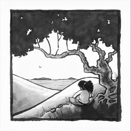
Chapter 1Flourishing
1–12
Chapter 1
Flourishing
The first three questions in Chapter 1 are worth pondering before you read the book — then returning to afterward, to see how your answers have changed.
For reflection & discussion
- What is mathematics? How would you describe it to a friend, in a sentence or two? What do you feel is the purpose of learning mathematics, for yourself or others?
- What connections do you see between doing mathematics and being human?
- Describe any virtues you have acquired as a result of doing mathematics. (Think of virtues as aspects of character that mathematics might build, such as habits of mind, that shape the way you approach life.)
- Have you ever compared yourself to others mathematically? Describe how that made you feel. Was it motivating or discouraging?
- Should mathematical opportunities be available for all who want them? Are they available for all who want them? Discuss.
- What value is there in studying math if you'll never use what you're learning?
- Why is "leaving math to the mathematicians" a bad idea?
- What does "mathematical affection" look like for you? How might mathematical affection manifest itself in others differently than in you?
- "Every single one of us is, whether we realize it or not, a teacher of math." In what ways is this statement true for you?
- Math is often taught as a bunch of procedures, without sense-making or understanding. Why do you think that is?
- "The skills society needs from math may change, but the virtues needed from math will not." What are some examples of math skills that were important 30 years ago but are less important to learn now, and why?
- Teachers: how can you communicate to your students that you are not just helping them learn skills, but also helping them build virtues, like creativity and persistence? How can your assessments reflect the importance of those virtues?
Resources
- Readers may be interested in the original speech on which this book is based (its audience was mathematicians, not the general public).
- A call for change worth reading closely: A Common Vision for Undergraduate Mathematical Sciences Programs in 2025 (MAA, 2015).
- Ben Braun's compiled list of readings that make the ideas in this book actionable.
- The book's endnotes also contain many related readings.
Chapter 2Exploration
13–19
Chapter 2
Exploration
For reflection & discussion
- Think of a time when you were captivated by exploring something (a location, an idea, a game). What analogies can you draw between doing math and this exploration?
- The rings of Saturn exhibit a pattern with a mathematical explanation. What other patterns have you encountered that might have mathematical explanations? Why so?
- "Even wrong ideas soften the soil in which good ideas can grow." Describe examples from your own experience that embody this truth.
- "The wayfinders were mathematical explorers of their society, using attentive study, logical reasoning, and spatial intuition." Choose any cultural practice and reflect on ways mathematical thinking might present itself in it.
- Teachers: what are some ways you can train your students to expect enchantment?
- Teachers: how can you build exploration into how you teach and the homework you give? Can you change a "compute" problem into an exploratory one?
- Teachers: math problems often have multiple solutions. In what ways can you be flexible, and allow students to find their own path?
Resources
- The Academy of Inquiry Based Learning provides resources and training for inquiry-based teaching at all levels.
- Tracy Johnston Zager, Becoming the Math Teacher You Wish You'd Had.
- Everyone should read Paul Lockhart's "A Mathematician's Lament."
- Games from Africa in the MIND Research Institute's South of the Sahara game box; Claudia Zaslavsky, Math Games & Activities from Around the World.
- The Art of Problem Solving website.
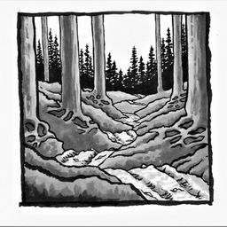
Chapter 3Meaning
20–26
Chapter 3
Meaning
For reflection & discussion
- "Mathematical ideas are metaphors." Reflect on one mathematical idea you've seen in multiple situations, and how its meaning was enhanced each time.
- The chapter draws a similarity between the growth of meaning of words in poetry and of ideas in math. What other similarities do you see between math and poetry?
- Teachers: reflect on Poincaré's statement that "an accumulation of facts is no more a science than a heap of stones is a house." What does it mean for how you teach?
- Teachers: is story-building part of your teaching? How do you show students connections between ideas?
- How does abstraction enrich the meaning of an idea? Describe one example from your own experience.
- How does the experience of joy (from successful sense-making) cultivate persistence?
- "Mathematics is… the art of engaging the meaning of patterns." Consider this in light of a scientific discovery in which math played a part. In what sense is it an art?
Resources
- See how ideas relate in this coherence map of the Common Core standards, and the University of Arizona progressions documents.
- Bob Moses, Radical Equations: Civil Rights from Mississippi to the Algebra Project.
- William Byers, How Mathematicians Think.
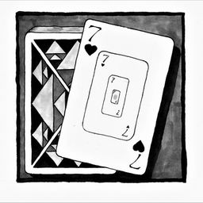
Chapter 4Play
27–33
Chapter 4
Play
For reflection & discussion
- Think of an activity you associate with play (try to think of something that isn't a game). List the characteristics that make it feel playful. Are there mathematical activities that share those characteristics?
- Teachers: inquiry and justification are both essential to doing math, and play is important to both. What activities in your class encourage inquiry or justification?
- Some people show patience and hopefulness when solving a problem; others give up quickly. How does math play build hopefulness and patience? Compare this to learning a sport.
- Describe how hopefulness (that problems can be solved) and patience (in waiting for a solution) might carry over to non-mathematical problems.
- Math play "asks you to change perspective, to look at a problem from different viewpoints." In what ways is this virtue useful in life?
- In what ways does chasing external recognition skew or limit the way we experience math?
- Teachers: how can you build a class environment that encourages students to play with the ideas they are learning?
Resources
- Sunil Singh and Chris Brownell, Math Recess: Playful Learning in an Age of Disruption.
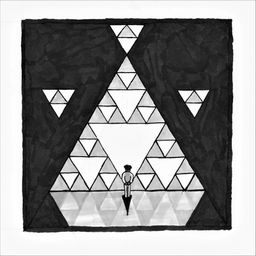
Chapter 5Beauty
34–40
Chapter 5
Beauty
For reflection & discussion
- Think of non-mathematical examples of (a) something whose beauty took a while to appreciate, and (b) something beautiful at first glance. In each, what preparation made the experience of beauty possible?
- Describe any experience of sensory, wondrous, insightful, or transcendent mathematical beauty. How did it make you feel?
- Think about your educational experiences. Which ones implicitly acknowledged the human desire for beauty?
- Where do you find mathematical beauty in the world?
- List features of art you find beautiful, and discuss how they compare or contrast to what you find beautiful about math.
- Have you seen the same beautiful idea appear in many different places? What feelings did that evoke?
- Teachers: what experiences of mathematical beauty have you had, and how can you enable similar experiences for your students?
Resources
- Roger Nelsen's series Proofs Without Words I, II, III.
- The Mathematical Art Galleries from the Bridges Organization.
- Kelsey Houston-Edwards and Tai-Danae Bradley's PBS Infinite Series.
- Aigner and Ziegler, Proofs from THE BOOK.
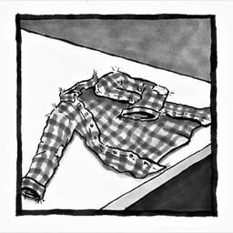
Chapter 6Permanence
41–47
Chapter 6
Permanence
For reflection & discussion
- What mathematical laws, truths, or ideas do you rely on in your daily life?
- How is mathematics a refuge? For whom is it a refuge?
- Many things in the universe change over time. Do you find it surprising that the laws of mathematics do not?
- "Each theorem is a nostalgic souvenir of a past adventure that stretched one's capabilities." Can you think of a mathematical idea that once seemed hard but now seems second nature?
- Teachers: think of a puzzle that kept you engrossed for hours. What captivated you? How can you design experiences that will keep students engrossed?
- What are some things in your life whose permanence you trust in?
- Is mathematical reasoning always trustworthy? How might people wittingly or unwittingly take advantage of the trust others place in mathematics?
Resources
- Learn about the art collection that included the Matsumoto puzzle in "The Creative Art of Coping in Japanese Internment" (NPR).
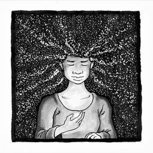
Chapter 7Truth
48–54
Chapter 7
Truth
For reflection & discussion
- Reflect on a time when shallow knowledge led you astray. How did that feel? How is deep knowledge an antidote?
- Two sides of an argument may hold different perspectives on the same event; both may be partly true. How is knowing the whole truth a better place to be? What does knowing the whole truth look like in mathematics?
- How can mathematical thinking equip you to converse with and respect people who hold different views?
- Give an example of a truth you once thought simple but now feel is more layered. Use it to explain why deep investigation matters.
- In what ways is mathematics "equipment for thinking"?
- Why is it important to think for oneself and not believe every statement from an authority? Teachers: how should this shape the way you teach?
- When you learn a new truth, how will you seek multiple ways of knowing it? Reflect on a mathematical and a non-mathematical example.
Resources
- Gian-Carlo Rota, "The Concept of Mathematical Truth."
- Eugene Wigner, "The Unreasonable Effectiveness of Mathematics in the Natural Sciences."
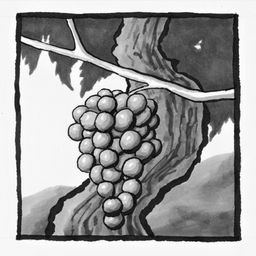
Chapter 8Struggle
55–61
Chapter 8
Struggle
For reflection & discussion
- Describe an activity you enjoy and list the internal and external goods associated with it. Do the same for an activity you don't enjoy. What do you notice about the lists?
- What internal goods does mathematics offer? How do these goods multiply when you share them with others?
- What external goods does mathematics offer? How can you tell they are external and not internal?
- Teachers: how can you incentivize students to value the process of struggle and not just the outcome?
- How is looking up an answer, before struggling with it, ultimately detrimental to your learning?
- "A declining society… incentivizes people to acquire external goods dishonestly, because they see their leaders unfairly distributing them." Discuss.
- "When people appreciate the inherent value of internal goods, they see the struggle to grow as a means of flourishing—even within an unjust system—and as a means of fighting against it." Describe examples that illustrate this.
Resources
- Eric M. Anderman, "Students Cheat for Good Grades. Why Not Make the Classroom about Learning and Not Testing?"
- Carol Dweck, "The Secret to Raising Smart Kids."
- Alasdair MacIntyre, After Virtue: A Study in Moral Theory.
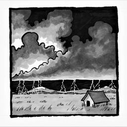
Chapter 9Power
62–68
Chapter 9
Power
For reflection & discussion
- Think of a recent challenging problem you explored. Which powers of mathematics did you develop or use (interpretation, definition, quantification, abstraction, visualization, imagination, creation, strategization, modeling, multiple representations, generalization, structure identification)?
- Teachers: do students explicitly see how you help them grow in these powers? How can you articulate their importance in almost any career or life path?
- Discuss creative power and coercive power you have witnessed in mathematical settings.
- Your social media feed is curated by algorithms. Is this a creative or coercive use of mathematical power? How do you know?
- Teachers: what responsibility do we have to help students wield mathematical power well?
- Teachers: how do you affirm students' dignity as creative human beings in the way they do mathematics?
- What relationship does (creative or coercive) mathematical power have to mathematical truth?
Resources
- Persi Diaconis and Ron Graham, Magical Mathematics — creative power used to inspire and entertain.
- Cathy O'Neil, Weapons of Math Destruction — a sobering look at coercive power.
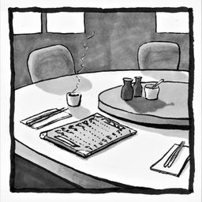
Chapter 10Justice
69–75
Chapter 10
Justice
For reflection & discussion
- If people have realized the way we teach math needs to change, why hasn't it changed yet? Who benefits from keeping it the same?
- All of us unwittingly harbor bias. How can we mitigate bias in mathematical spaces? Who is harmed by it, and why?
- What inequities do you notice in mathematical spaces? Who is harmed? Think deeper than the obvious answers.
- With whom do you share the "secret menu" in mathematics, and why? How might that change now that you've read this chapter?
- How does one's view of the purpose of mathematics affect one's view of who should pursue it? Compare several views and their ramifications for who belongs.
- Teachers: list ways mathematical learning may involve cultural experiences. How can you mitigate the effects of cultural barriers?
- Teachers: have you ever felt tempted to discourage a particular student from studying math? Why?
Resources
- Test your implicit biases at implicit.harvard.edu.
- Rehumanizing Mathematics for Black, Indigenous, and Latinx Students, ed. Imani Goffney and Rochelle Gutiérrez.
- Mathematics for Social Justice (Karaali & Khadjavi) and High School Mathematics Lessons to Explore, Understand, and Respond to Social Injustice.
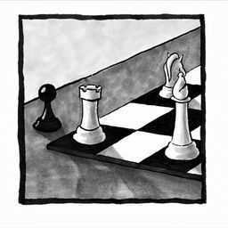
Chapter 11Freedom
76–82
Chapter 11
Freedom
For reflection & discussion
- Describe settings in which you've experienced any of these freedoms: of knowledge, to explore, of understanding, or to imagine.
- Give an example of a problem you solved easily because you knew multiple approaches.
- What is the strangest, most imaginative idea you've encountered in mathematics, and why did it capture your fancy?
- Who may not feel welcome in mathematical spaces? What concrete actions can you take to extend the freedom of welcome to those around you?
- "Seeing setbacks as springboards" means exploring how wrong ideas can lead to good answers. Give examples from your own experience when a misunderstanding was beneficial to your growth.
- What have you experienced in a math classroom that felt like freedom? What felt like domination?
- Teachers: how can you create an environment where students feel free to explore and ask questions, and don't feel tempted to pretend they understand when they don't?
Resources
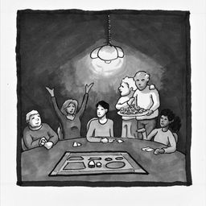
Chapter 12Community
83–89
Chapter 12
Community
For reflection & discussion
- Why should hospitality, or excellence in teaching and mentoring, be central to doing mathematics well?
- How can you build a community in the classroom or home in which participants push one another to grow while not being overly focused on achievement?
- What actions can you take to address feelings of not belonging in math communities?
- How does an emphasis on building mathematical virtues counter the notion of math as a one-dimensional endeavor?
- Why are we so tempted to rank people according to a singular mathematical ability?
- Describe three concrete actions you can take to extend mathematical hospitality to others.
- If a virtue is an "excellence of character that leads to excellence of conduct," explain why vulnerability is a virtue, especially in math communities.
Resources
- National Association of Math Circles — gatherings for discovery around low-threshold, high-ceiling problems.
- BEAM (Bridge to Enter Advanced Mathematics) — programs to help underserved students enter the sciences.
- MathPath — a summer math camp for middle-schoolers.
- The Park City Mathematics Institute summer program for math teachers.
- Darryl Yong, "Active Learning 2.0: Making It Inclusive."
- Ilana Seidel Horn, Motivated: Designing Math Classrooms Where Students Want to Join In.
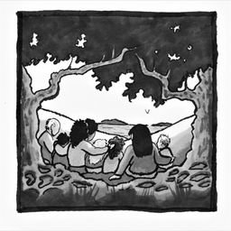
Chapter 13Love
90–96
Chapter 13
Love
For reflection & discussion
- In what harmful ways do we use mathematics as "a showcase for flaunting talent rather than a playground for building virtue"?
- In what ways do you see people using mathematical achievements as a "stamp of self-importance"?
- What are some ways to fight the temptation to compare ourselves to others mathematically? Teachers: how can you help students build identities that don't depend on comparisons?
- How can you honor each person you meet as a dignified mathematical thinker?
- Reflect on a friendship that deepened because you worked together on a mathematical problem. How is knowing someone through mathematics different?
- "To love is to believe that everyone can flourish in mathematics." Why is believing this a form of unconditional love?
- Who are the forgotten among you, mathematically speaking? Whom will you love, whom will you read differently?
Resources
- Parker Palmer, To Know as We Are Known — a wonderful book about teaching, and about love.
- My essay The Lesson of Grace in Teaching, which calls us away from an achievement-oriented mindset.
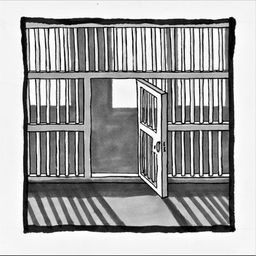
EpilogueEpilogue
97–100
Epilogue
Epilogue
For reflection & discussion
- Describe the ways you see Christopher Jackson flourishing even in challenging circumstances.
- Learn about mass incarceration and use mathematics to quantify the impact it has had on communities of color.
- Write an essay describing how this book has changed your understanding of what math is, who it's for, and why anyone should learn it.
- Consider the mathematical virtues in this book and explain how they can help us (you, epidemiologists, and others) solve problems arising from a pandemic.
Learn more about Mathematics for Human Flourishing, or explore the endnotes.